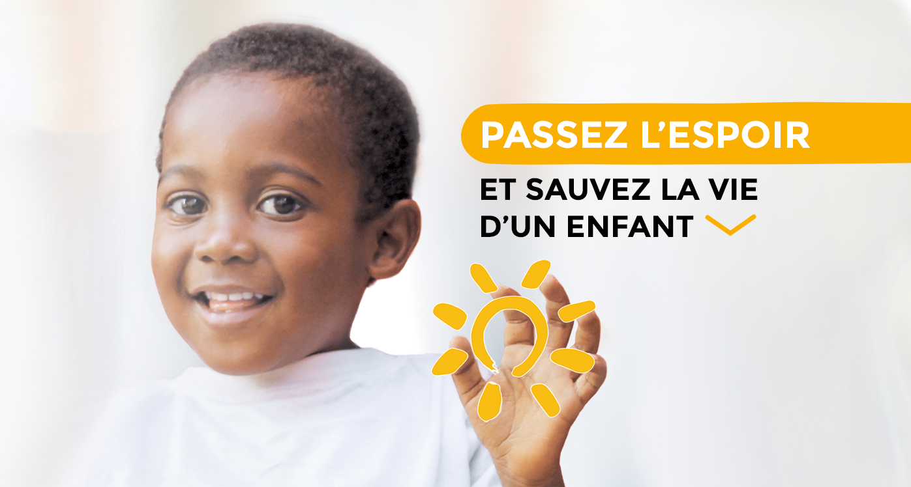

PASSEZ L'ESPOIR
75% du montant de votre don sont déductibles de votre impôt sur le revenu dans la limite de 1 000 €.
Faites votre don avant le 31 décembre 2021 pour en bénéficier cette année.
75% du montant de votre don sont déductibles de votre impôt sur le revenu dans la limite de 1 000 €.
Faites votre don avant le 31 décembre 2021 pour en bénéficier cette année.